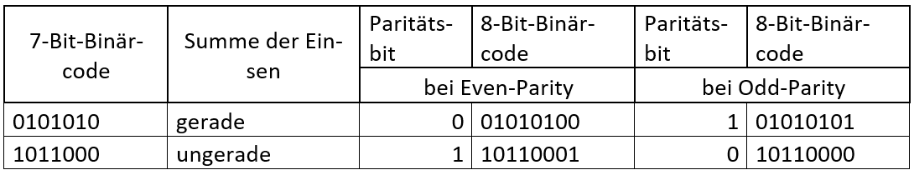
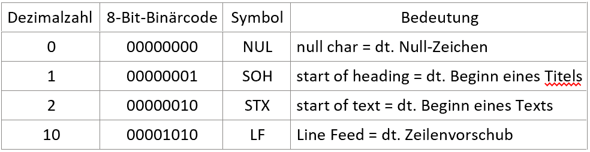
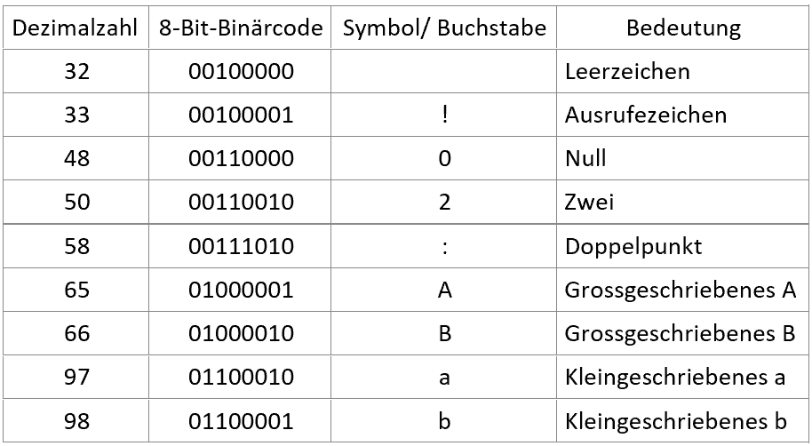
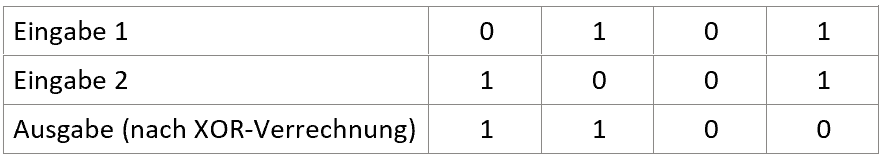

Grundlagen und Begriffe
Begriffserklärung Permutation
Vertauschung von Bits nach bestimmten Vorgaben
Paritäts-Check/ Paritätsbit
Beim Paritäts-Check geht es darum, wie viele Bits eines Bytes mit Einsen besetzt sind. Das Paritätsbit wird dann ergänzt als 0 oder 1, um die Anzahl Einsen gerade oder ungerade zu machen, je nachdem ob es sich um eine Odd-Parity (dt. ungerade Parität) oder Even-Parity (gerade Parität) handelt. Die Odd- oder Even-Parity wird jeweils von Sender und Empfänger gemeinsam im Vornhinein abgemacht.
Die folgende Tabelle bietet eine Veranschaulichung des Paritäts-Checks:
Umwandlung von Text in Binärzahlen (ASCII-Code)
Damit der Computer mit Buchstaben, Zeichen und Zahlen natürlicher Sprachen arbeiten kann, müssen diese zuerst in Binärzahlen umgewandelt werden. Dies geschieht mit ganz bestimmten Tabellen. Für diese Arbeit wird hierfür die ASCII-Tabelle verwendet. Diese wandelt Zahlen, Eingaben oder Buchstaben in einen für den Computer lesbaren 8-Bit-Binärcode um. In der ursprünglichen Version des ASCII-Codes sind nur 7 Bits verwendet worden, da das achte für das Paritätsbit gebraucht wurde. Die neue Version ist kompatibel mit der alten, um den 7-Bit-Binärcode zu erhalten muss beim 8-Bit-Binärcode einfach das erste Bit weggelassen werden. Heutzutage wird das Paritätsbit meist nicht mehr gebraucht. Dafür wird das achte Bit zur Erweiterung der ASCII-Tabelle verwendet, sodass mehr Sonderzeichen übersetzt werden können.
Die Charaktere 0 -31 im Binärcode sind nicht anzeigbare Steuerungscodes und werden beispielsweise dafür benutzt, um Drucker zu steuern.
Die Charaktere 32 -127 im Binärcode sind anzeigbare Zeichen, wie Buchstaben, Ziffern oder Textzeichen. Dies sind die sogenannten ASCII druckbaren Zeichen.
XOR-Verrechnung
Ein Exklusiv-Oder-Gatter , auch XOR-Gatter, ist ein Gatter mit zwei Eingaben und einer Ausgabe. Wenn von zwei Bits die vergleicht werden genau eines davon eine 1 ist, ist die Ausgabe auch eine 1, ansonsten ist sie 0.
